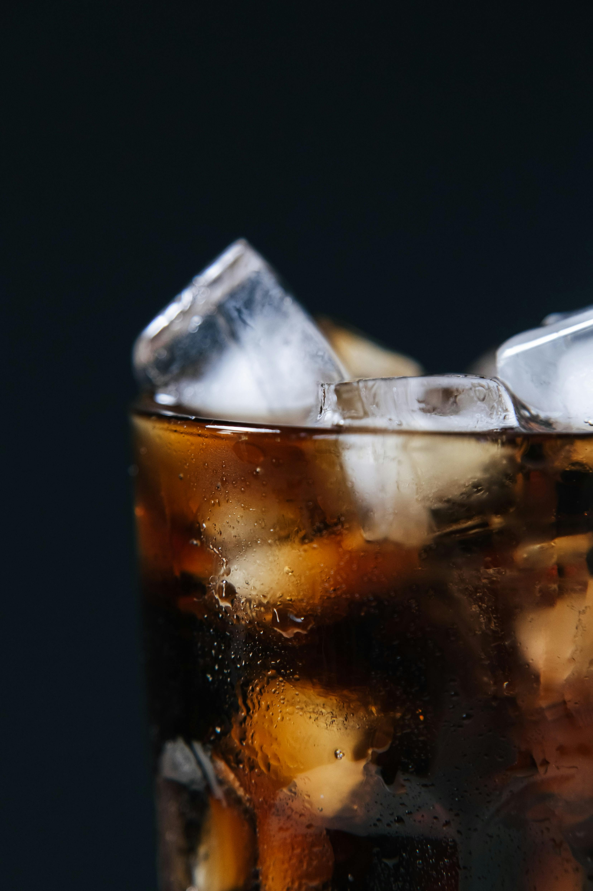

Jack and Coke

Jack & Coca-Cola®
The classic American cocktail.
When smooth, charcoal-mellowed Tennessee Whiskey first met the sweet fizz of Coca-Cola®,
America’s classic cocktail was born. The natural vanilla of the whiskey mixes so perfectly
with the heavy caramel of Coca-Cola®, it’s almost like the two were made for each other.
Ingredients
- 50 ml Jack Daniel's Old No. 7®
- Coca-Cola®
- Ice
Steps
- 3/4 fill a highball glass with cubed ice
- Pour Old No. 7 over ice
- Top with cola